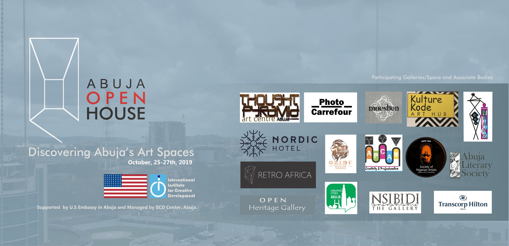
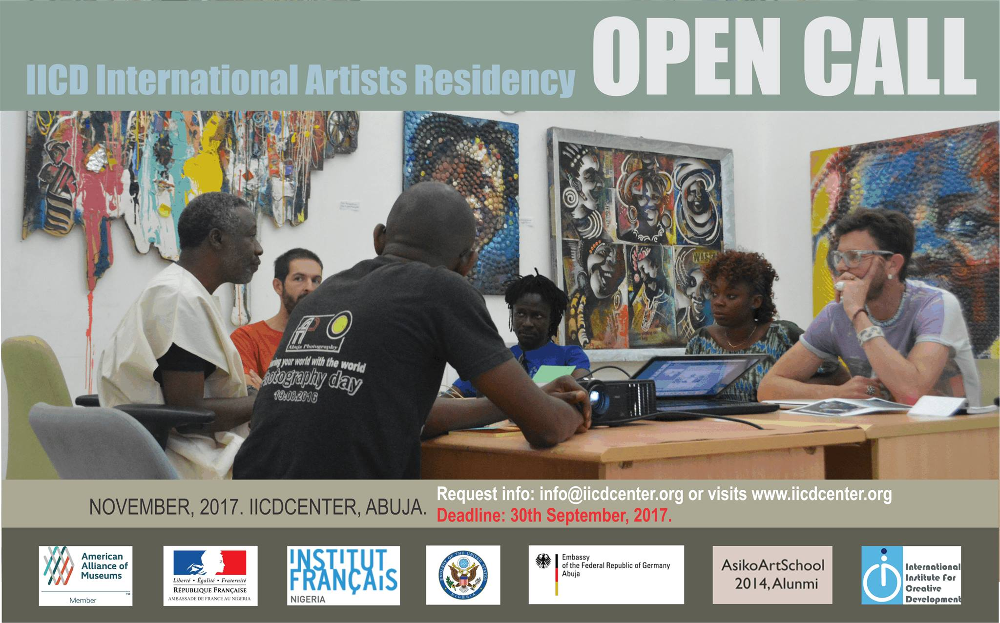
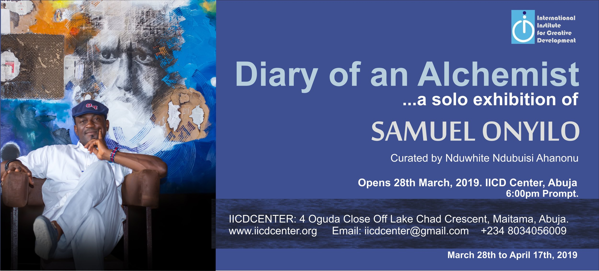
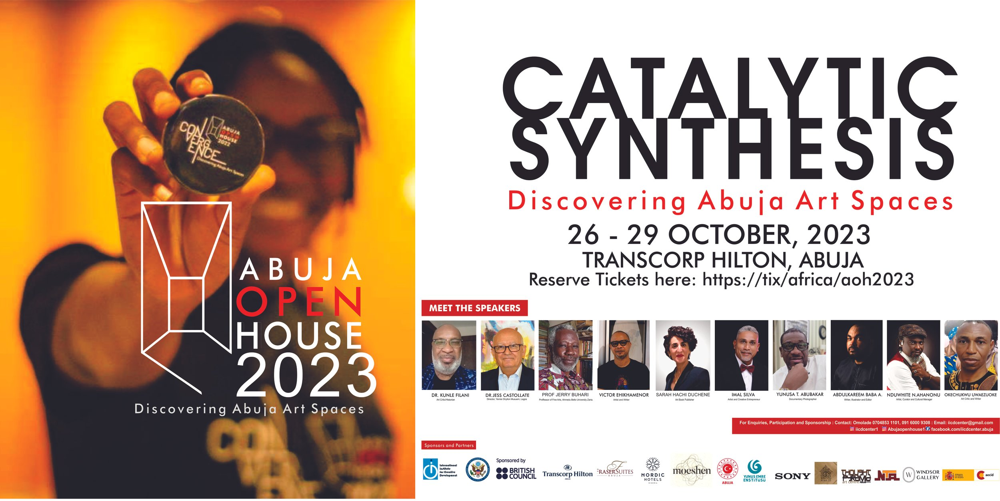
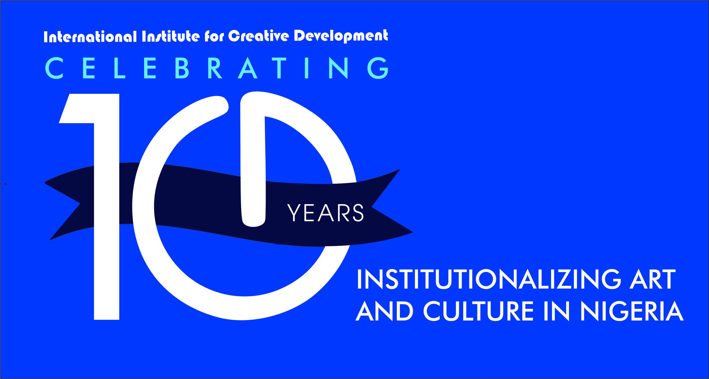

Inaugural Edition · 1st
The inaugural Abuja Open House — held October 25–27, 2019 — was the realisation of a long-held vision by Nduwhite Ndubuisi Ahanonu to create a festival that would bridge the gap between Abuja's creative community, the general public, and the city's art galleries and cultural spaces.
Created in collaboration with the United States Embassy in Abuja, the first edition set the template for what would become the city's most significant visual arts event. Multi-venue, multi-day, and radically public, it activated spaces across the city that had never before been used for art — from hotel lobbies to embassy courtyards and private galleries.
The Open House model was described by critics as "afflicted with none of the numbing predictability and officialdom of the major art events hitherto held in the federal capital city." It was a watershed moment for the Abuja creative scene — proof that the city had both the appetite and the infrastructure for a serious contemporary art festival.
Among the featured exhibitions was Time in Perspective — a group show presented at the lobby of the Nordic Hotel, Mabushi, opened at a VIP reception serenaded by Turkish musical duo Sinan Bora Saribas (violin) and Kutluhan Gozutok (guitar). The pairing of art, music, and architecture in an unexpected venue set the tone for the Open House's distinctive approach.
See the 2022 Edition →



The 2019 Open House coincided with IICD's 10th anniversary — making it a doubly significant occasion. The centre marked a decade of creative work in Abuja with exhibitions, awards to key partners, and a celebration of the people who had made IICD's journey possible.
Partners recognised at the anniversary included the US Embassy Abuja and Transcorp Hilton Hotel — both acknowledged for their sustained support of the arts in Nigeria. The awards ceremony underlined IICD's ethos of collaborative relationship-building as the foundation for lasting cultural impact.
Over ten years, IICD had built residency programmes, mounted exhibitions, trained curators, represented Nigeria at the Dakar Biennale, and — through its collaboration with the US Embassy and Institut Français — positioned Abuja as a city with a serious, growing contemporary art scene.
Looking ahead from the anniversary, Ahanonu pledged: "In the future, we will increase the number of activities to strategically democratise art and culture, taking it to communities that are disenfranchised."
About IICD's History
Group exhibition exploring how artists negotiate time — historical, personal, and collective — in their practice. Opened at a VIP reception with live music by Turkish duo Sinan Bora Saribas (violin) and Kutluhan Gozutok (guitar). One of the flagship exhibitions of the inaugural Open House.
The Open House activated locations across Abuja over three days, bringing audiences to galleries, cultural spaces, and unexpected venues. Participants were able to follow a curated trail through the city's creative landscape — many experiencing art in a public setting for the first time.
At the IICD Centre, the 10th anniversary was marked with an exhibition and a ceremony awarding partners — including the US Embassy and Transcorp Hilton — for their role in advancing the arts in Abuja over the preceding decade.
Alongside the exhibitions, the 2019 Open House featured artist talks, performances, and public events open to all Abuja residents — creating a genuinely inclusive, city-wide cultural moment rather than a gatekept art-world event.
"The Abuja Open House is a one-of-a-kind blend of dynamic art experiences and gallery hopping that provides solid foundations for convergence and synchronisation of Abuja's creative framework — afflicted with none of the numbing predictability and officialdom of the major art events hitherto held in the federal capital city."— Critical review of the Abuja Open House